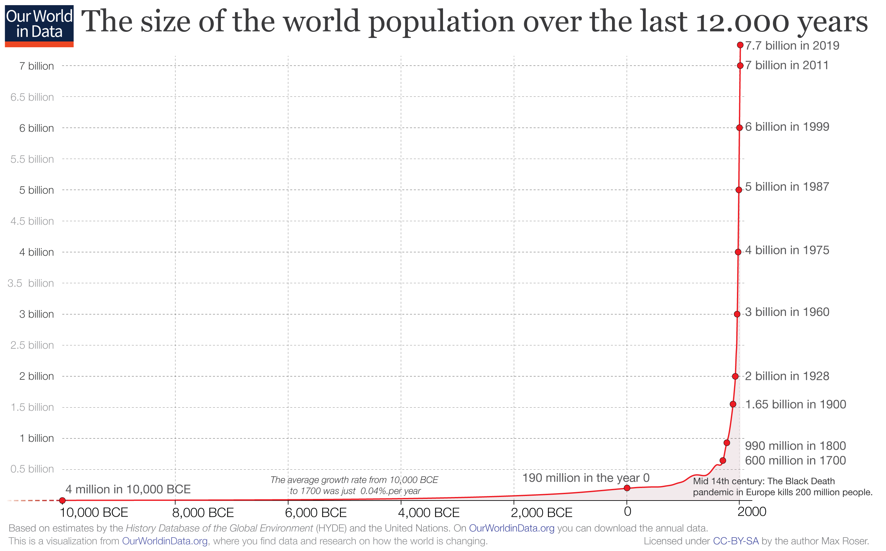

Exoponential Growth
Industrialization has allowed our species to grow to staggering numbers. The human population has grown seven-fold since the beginning of the 19th century. In fact, all the people living today make up 6.5% of all people who have ever lived. We have grown exponentially, inhabiting virtually all livable land on the planet.
- - Click the images to see current population data and population distribution.
- - Watch the videos to explore the science behind human population growth.
Human Population Growth Graph

×

Human Population Through Time
World Population Cartogram

×